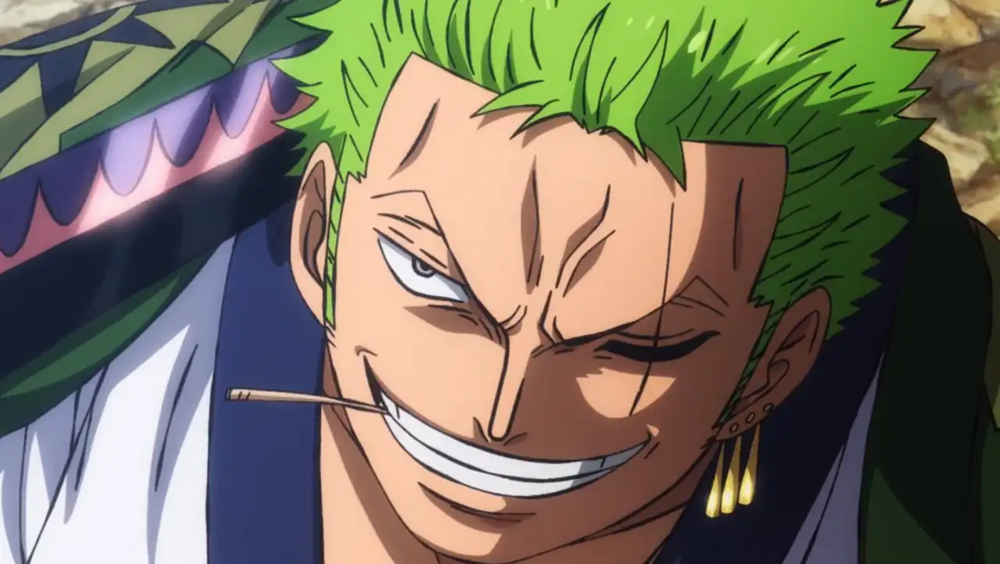
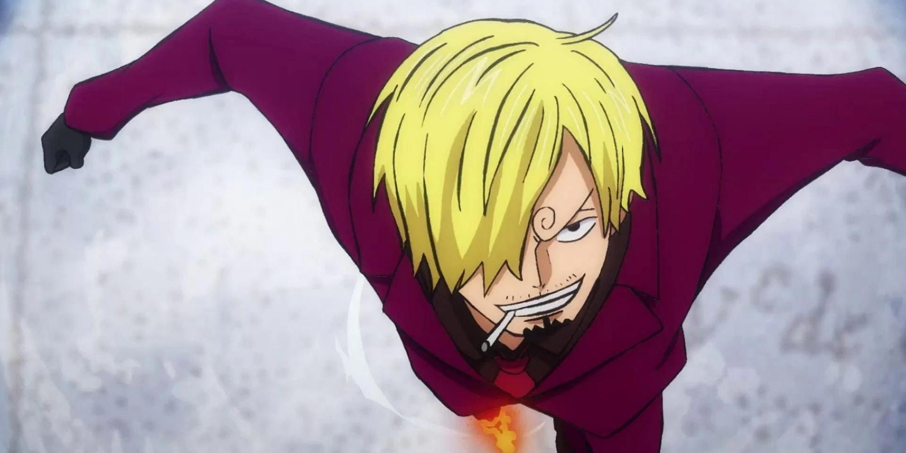

Cards

Roronoa Zoro, herdeiro da linhagem Shimotsuki, samurai atual portador de Enma, katana desenvolvida para assassinato em Wano.

Monkey D. Luffy, herdeiro da família D, portador da Zoan Mítica, Nika Nika no Mi: Modelo deus do sol, é o principal personagem da trama.

Vinsmoke Sanji, herdeiro da genética da Germa 66, portador dos genes despertados e traje de batalha da Germa, Sanji é um exímio cozinheiro e uma das asas do futuro rei dos piratas.